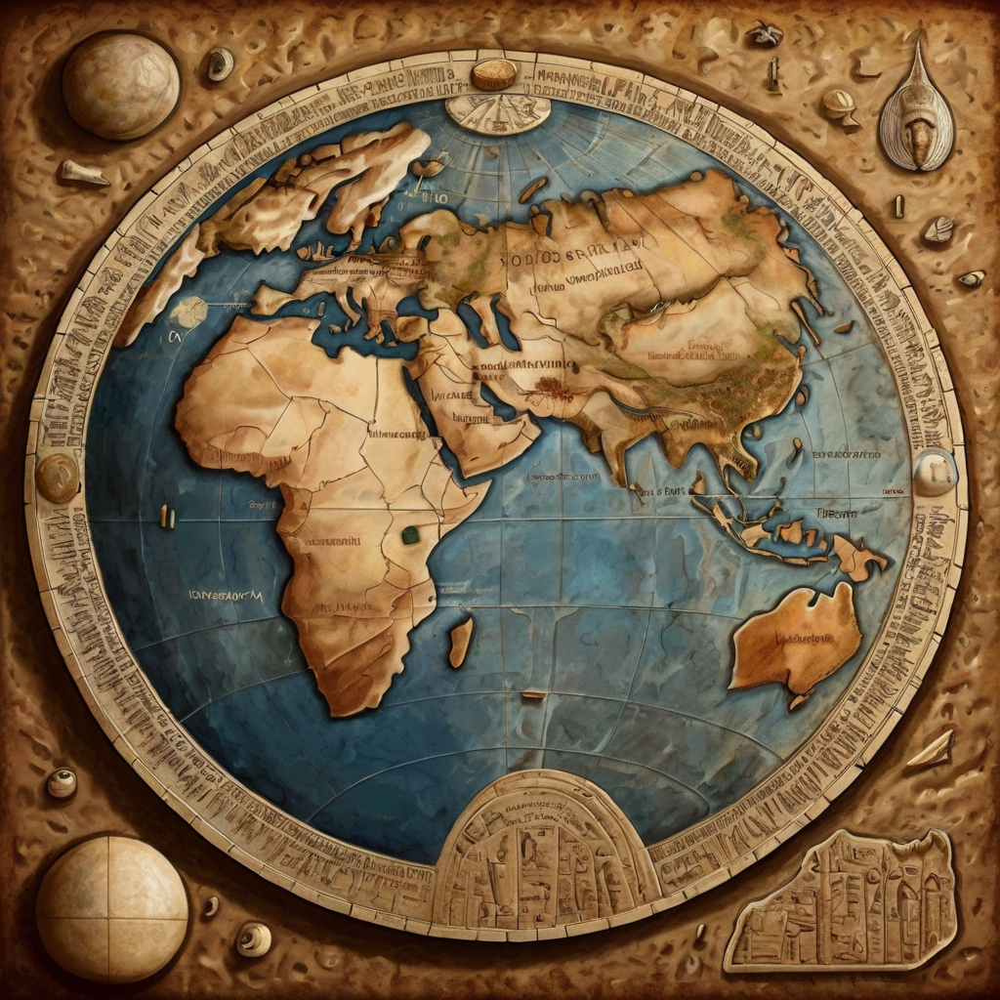
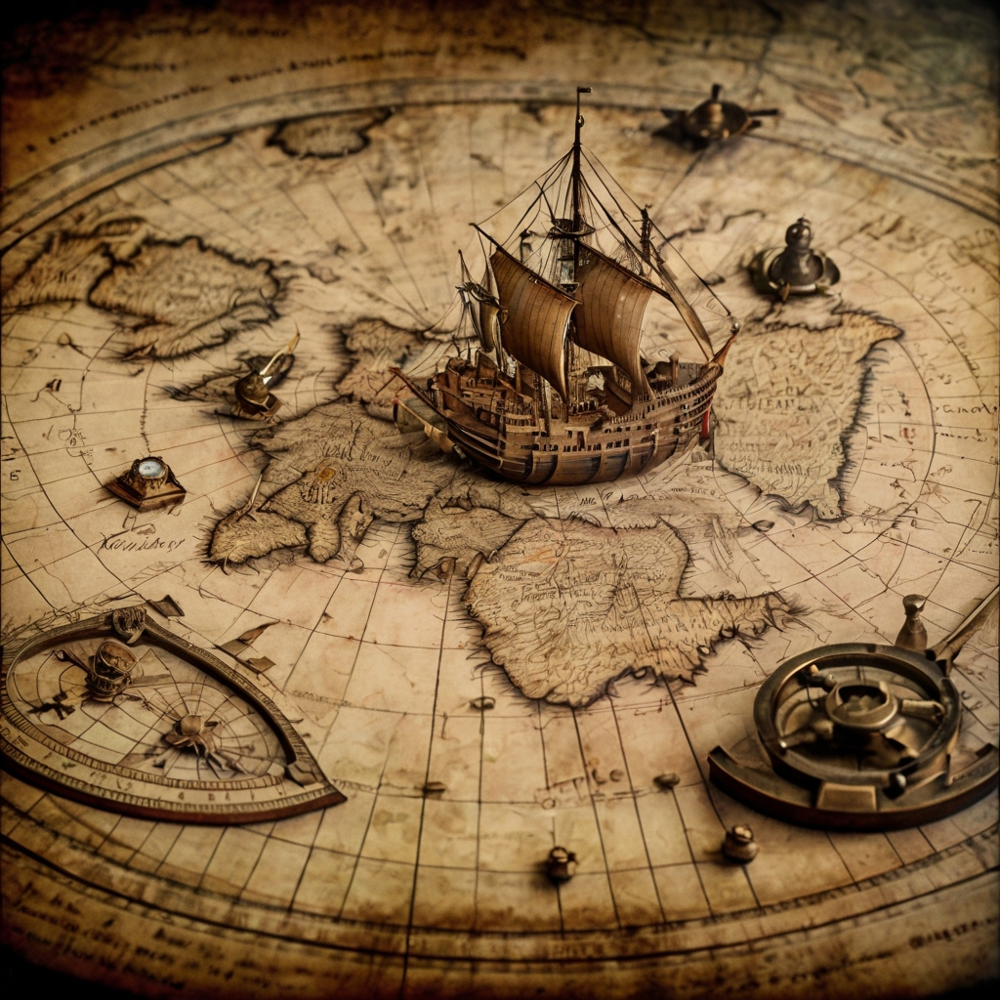
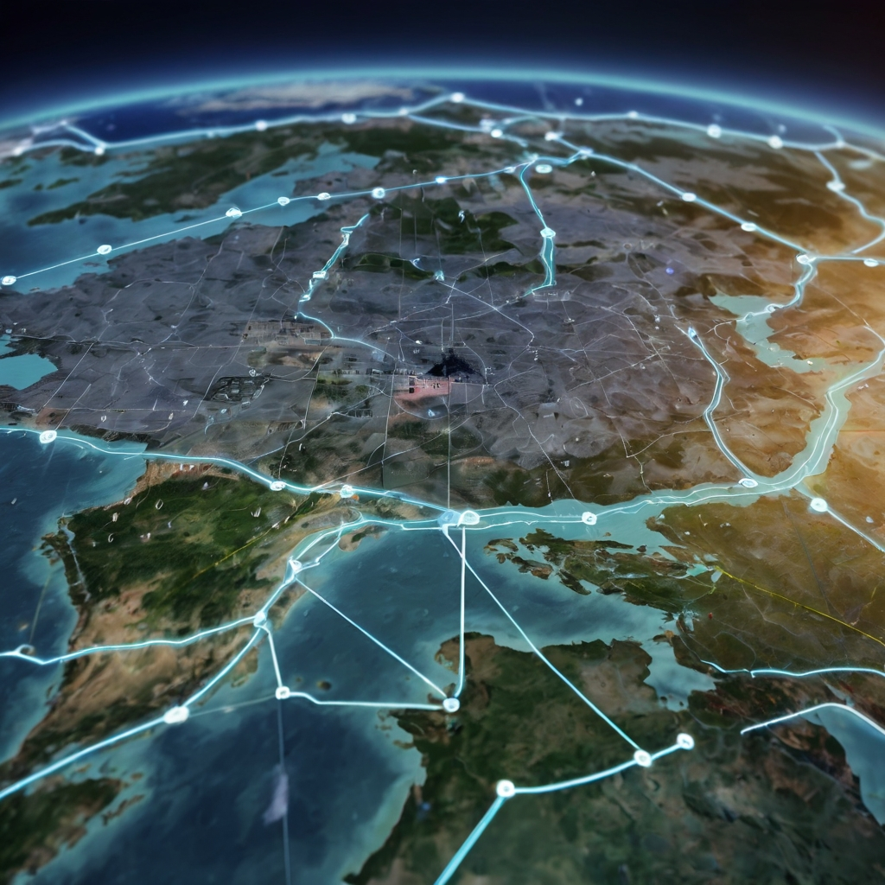
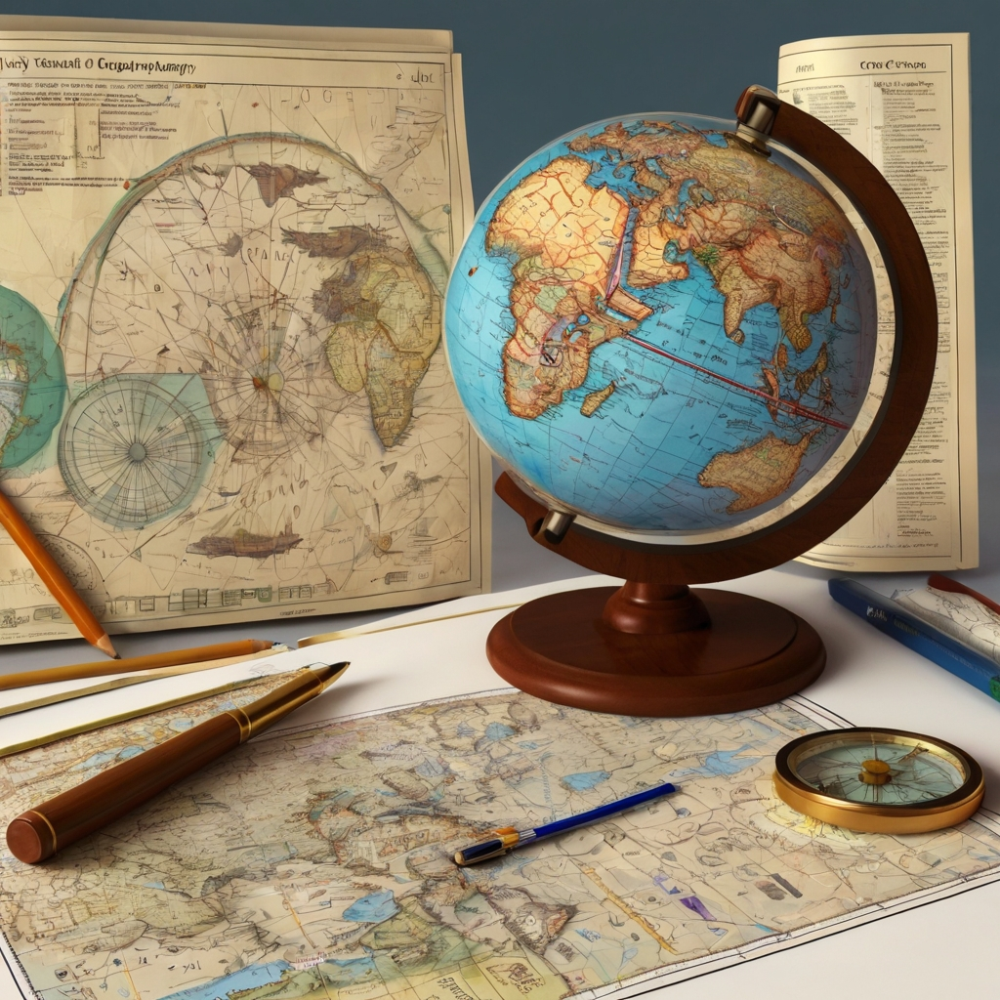

Ancient Map-Making
The history of map-making can be traced back to ancient civilizations, where maps were used for navigation, land management, and military purposes. Early maps were often inaccurate and lacked detail, but they provided a foundation for future advancements in cartography.
One of the earliest known maps is the Babylonian World Map, created around 600 BCE, which depicts a flat, disk-shaped Earth. The Greeks and Romans also made significant contributions, with figures like Anaximander, who created one of the first world maps, and Ptolemy, whose work in geography and cartography influenced map-making for centuries.
Middle Ages and the Age of Exploration
During the Middle Ages, map-making stagnated in Europe, but it flourished in the Islamic world. Islamic scholars, such as Al-Idrisi, created detailed and accurate maps that surpassed their European counterparts.
With the advent of the Age of Exploration, European map-making experienced a resurgence. Explorers like Christopher Columbus, Vasco da Gama, and Ferdinand Magellan expanded the known world, and cartographers like Gerardus Mercator developed new map projections to represent the curved surface of the Earth on flat paper more accurately. The use of new technologies such as the astrolabe and the magnetic compass further enhanced the precision of maps.
Modern Map-Making
The modern era of map-making began with the development of accurate map projections and the introduction of aerial and satellite imagery. These advancements allowed for more detailed and precise maps than ever before.
In the 20th century, the advent of Geographic Information Systems (GIS) revolutionized cartography. GIS allows for the integration of data from multiple sources and the creation of dynamic, interactive maps. Satellite imagery and GPS technology further enhance the accuracy and detail of modern maps. Today, digital mapping services like Google Maps and OpenStreetMap provide real-time, interactive maps that are accessible to anyone with an internet connection.
Famous Mapmakers
Throughout history, there have been many notable mapmakers who have made significant contributions to the field of cartography. These include:
- Ptolemy: An ancient Greek geographer whose work "Geographia" remained influential for over a thousand years.
- Gerardus Mercator: A 16th-century Flemish cartographer who created the Mercator projection, which is still used in navigation today.
- Abraham Ortelius: A contemporary of Mercator, Ortelius is known for creating the first modern atlas, "Theatrum Orbis Terrarum."
- John Snow: A 19th-century British physician whose map of a cholera outbreak in London is one of the earliest examples of using maps for epidemiology.
Map Collections
There are many museums, libraries, and online resources dedicated to the history of map-making. Some notable examples include:
- David Rumsey Map Collection: An extensive collection of historical maps available online.
- British Library Map Collection: One of the largest map collections in the world, featuring maps from all periods and regions.
- Library of Congress Geography and Map Division: Holds over 5.5 million maps, making it one of the most significant collections globally.
Conclusion
The history of map-making is a fascinating subject that reflects the evolution of human civilization and technology. From ancient civilizations to the modern era, maps have played a critical role in shaping our understanding of the world around us.
Today, with advanced technology and digital tools, maps are more accessible and accurate than ever before, continuing to be an essential part of navigation, exploration, and our daily lives.
Glossary
Here are some key terms related to map-making:
- Cartography: The science or practice of drawing maps.
- Projection: A method of representing the curved surface of the Earth on a flat surface.
- GIS (Geographic Information System): A system designed to capture, store, manipulate, analyze, manage, and present spatial or geographic data.
- Astrolabe: An ancient instrument used to make astronomical measurements, typically of the altitudes of celestial bodies, and in navigation for calculating latitude.
- GPS (Global Positioning System): A satellite-based navigation system that allows users to determine their exact location anywhere on Earth. 